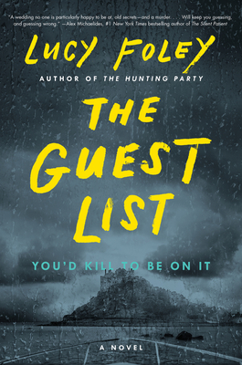

<!doctype html>
<html>
    <title>Thriller</title>
    <link rel="stylesheet" href="main.css">
</html>
<body>
    <nav>
        <label class="logo">Thriller</label>
        <ul class="nav-links">
            <li><a href="index.html">Home</a></li>
            <li><a href="book.html">Adventure</a></li>
            <li><a href="book1.html">Science Fiction</a></li>
            <li><a href="book3.html">Horror</a></li>
            <li><a href="book4.html">Humour</a></li>
            <li><a href="book5.html">Mystry</a></li>
        </ul>
    </nav>
    <table cellspacing="20px">
        <tr>
            <td>
                <details>
                    <summary>Introduction</summary>
                      <p>
                        Alicia Berenson’s life is seemingly perfect. A famous painter married to an in-demand fashion photographer, she lives in a grand house with big windows overlooking a park in one of London’s most desirable areas. One evening her husband Gabriel returns home late from a fashion shoot, and Alicia shoots him five times in the face, and then never speaks another word.

Alicia’s refusal to talk, or give any kind of explanation, turns a domestic tragedy into something far grander, a mystery that captures the public imagination and casts Alicia into notoriety. The price of her art skyrockets, and she, the silent patient, is hidden away from the tabloids and spotlight at the Grove, a secure forensic unit in North London.
</p>     
                    
                </details></td>
            
            <td class="a">
                <h3>The Silent Patient</h3>
                <p>Alex Michaelides</p>
                <a class="btn1" href="order.html">Purchase</a>
            </td>
        </tr>
        <tr>
            <td>
                <details>
                    <summary>Introduction</summary>
                      <p>
                        The bride ‧ The plus one ‧ The best man ‧ The wedding planner ‧ The bridesmaid ‧ The body

On an island off the coast of Ireland, guests gather to celebrate two people joining their lives together as one. The groom: handsome and charming, a rising television star. The bride: smart and ambitious, a magazine publisher. It’s a wedding for a magazine, or for a celebrity: the designer dress, the remote location, the luxe party favors, the boutique whiskey. The cell phone service may be spotty and the waves may be rough, but every detail has been expertly planned and will be expertly executed.

But perfection is for plans, and people are all too human. As the champagne is popped and the festivities begin, resentments and petty jealousies begin to mingle with the reminiscences and well wishes. The groomsmen begin the drinking game from their school days. The bridesmaid not-so-accidentally ruins her dress. The bride’s oldest (male) friend gives an uncomfortably caring toast.
</p>     
                    
                </details></td>
            <td class="a">
                <h3>The Guest List</h3>
                <p>Lucy Foley</p>
                <a class="btn1" href="order.html">Purchase</a>
            </td>
        </tr>

        <tr>
            <td><details>
                <summary>Introduction</summary>
                  <p>
                    Nora hasn't seen Clare for ten years. Not since Nora walked out of school one day and never went back.

There was a dark, dark house

Until, out of the blue, an invitation to Clare’s hen do arrives. Is this a chance for Nora to finally put her past behind her?

And in the dark, dark house there was a dark, dark room

But something goes wrong. Very wrong.

And in the dark, dark room....

Some things can’t stay secret for ever.
</p>
            </details></td>
            <td class="a">
                <h3>In a dark, dark wood</h3>
                <p>Ruth Ware</p>
                <a class="btn1" href="order.html">Purchase</a>
            </td>
        </tr>

        <tr>
            <td>
                <details>
                    <summary>Introduction</summary>
                      <p>
                        Ex-military policeman Jack Reacher is a drifter. He's just passing through Margrave, Georgia, and in less than an hour, he's arrested for murder. Not much of a welcome. All Jack knows is that he didn't kill anybody. At least not here. Not lately. But he doesn't stand a chance of convincing anyone. not in Margrave, Georgia. Not a chance in hell.
                    </p>
</details></td>
            <td class="a">
                <h3>Killing Floor</h3>
                <p>Lee Child</p>
                <a class="btn1" href="order.html">Purchase</a>
                
            </td>
        </tr>
    </table>
</body>